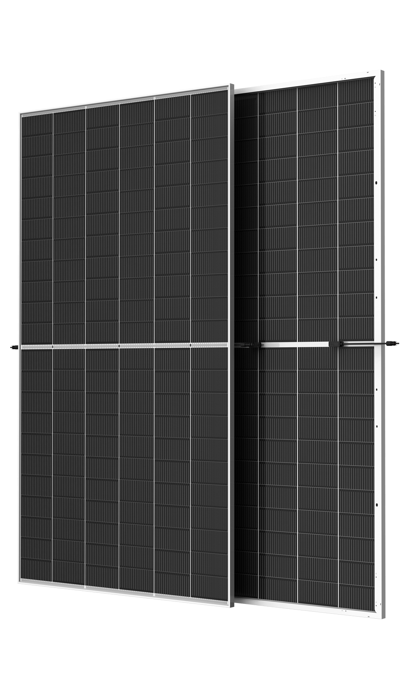

High-output bifacial modulesSolar PV modules / High-output bifacial modules
760 W G3 Utility Bifacial Module (Preliminary)
MODEL REFERENCETSM-760NEG21C.20Q
- STC front power
- 760 Wp
- Efficiency
- 24.5%
- Cells
- 264
NEG21C.20Q G3 manufacturer family view; 760 W configuration.